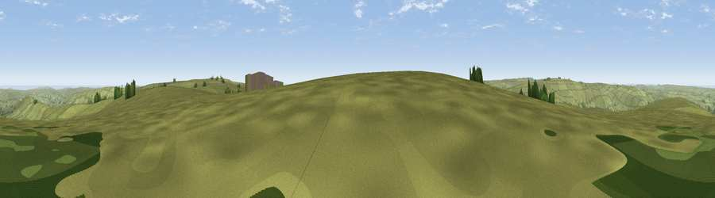

Ledging Hill
#9754 in England · top 26% of its area beats it · near BottonWhere it is
The exact computed spot (NZ 67474 02131). Click the marker for map links.
The view, rendered

A 360° render of this exact spot computed from the terrain model, tree cover and land cover — summer colours, afternoon light, calibrated against photographs of famous viewpoints. Real trees, hedges and buildings will differ in detail.
The panorama
Grey silhouette: terrain skyline in each direction (720 bearings, Earth curvature and refraction included). Dashed green: skyline with trees (+15 m) and buildings (+8 m) as obstacles. Blue strip: how far the ground is visible on each bearing.
Where the view opens
Wedge length = distance to the farthest visible ground on that bearing (vegetation-aware). Rings at 10, 25 and 50 km.
What fills the view
94% grassland · 3% water · 1% woodland ·
Angular shares of the visible panorama (visual magnitude), not map area. Landscape diversity 0.11 (0–1 Shannon).
Key numbers
More beautiful places nearby
The staircase of upgrades: each row has a higher view potential than everything closer. Driving times are estimates from straight-line distance, calibrated against real road routing — check an actual route before setting out.
| Place | Direction | Drive | Score |
|---|---|---|---|
| Viewpoint near Botton | NNE · 3 km | ~8 min | 65.4 |
| Viewpoint near Botton | NE · 4 km | ~9 min | 72.1 |
| Peat Hill | E · 5 km | ~12 min | 72.5 |
| Viewpoint near Ingleby Greenhow | W · 7 km | ~14 min | 75.6 |
| Viewpoint near Ingleby Greenhow | WNW · 8 km | ~16 min | 76.0 |
| White Hill | W · 11 km | ~21 min | 84.2 |
| Viewpoint near Great Broughton | W · 11 km | ~21 min | 84.4 |
| Viewpoint near Kirkby | W · 14 km | ~25 min | 84.9 |
54.41017, -0.96191 · source: osm peak · position refined by local search. Computed location — check access rights before visiting.